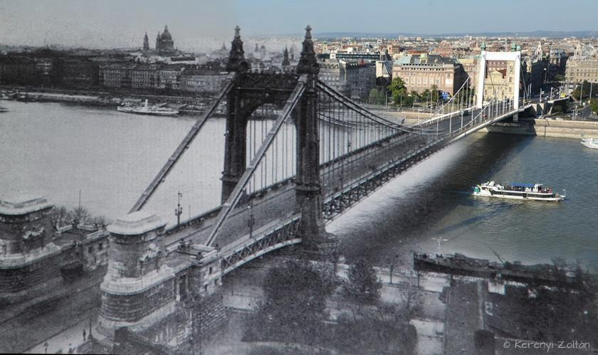

Erzsébet-híd
Az Erzsébet híd Budapest egyik közúti hídja a Dunán, amely az V. kerületet köti össze az I. kerülettel.
Az eredeti Erzsébet lánchíd a magyar hídépítő mérnökök és a hazai ipar egyedülálló teljesítménye volt.
Átadását követően csaknem negyed századig rendszerében világrekorder, hetven éven át Duna-rekorder, és az egyetlen olyan híd,
amely a folyót 290 m-es középnyílásával mederpillér nélkül ívelte át. A világ első, konstrukciójában sok újat hozó, acélpilonos lánchídja volt.
A híd a második világháború áldozatává vált: 1945 januárjában a visszavonuló német csapatok felrobbantották.
A helyette épült, 10 méterrel szélesebb kábelhidat 1964-ben adták át.
